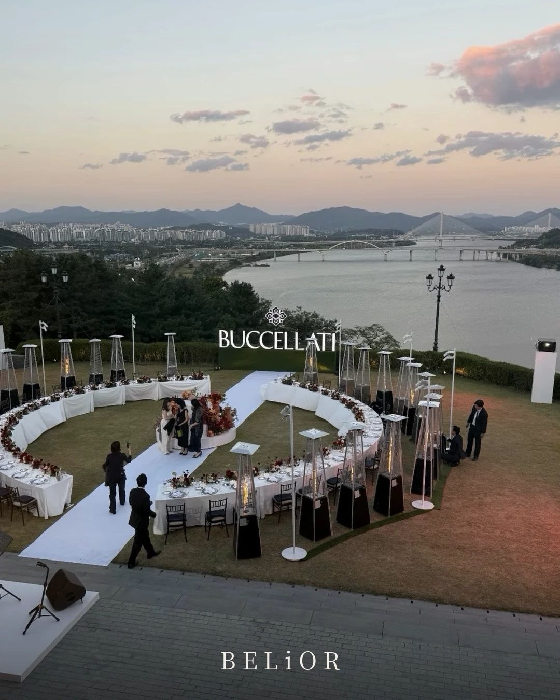
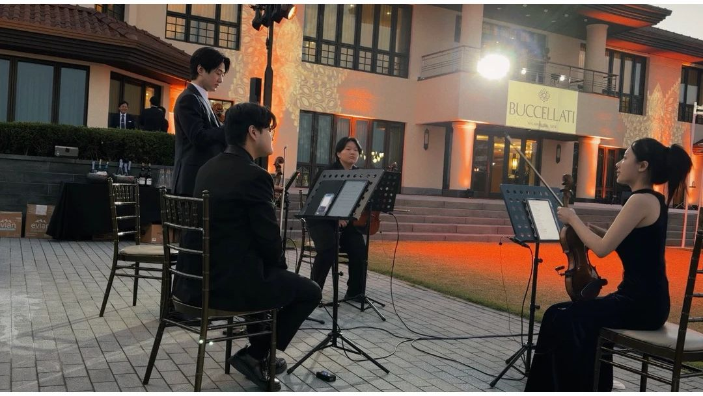
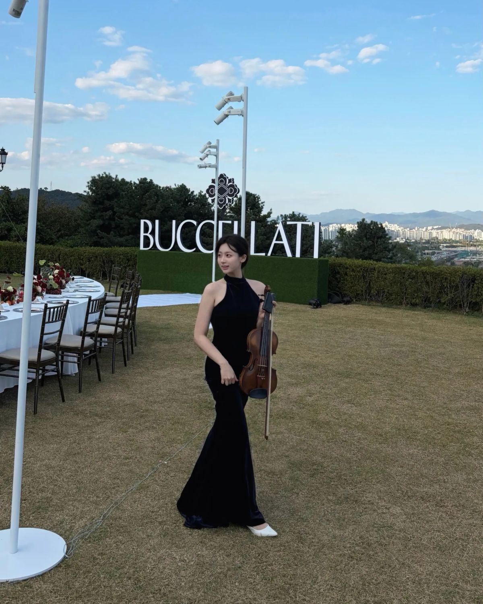
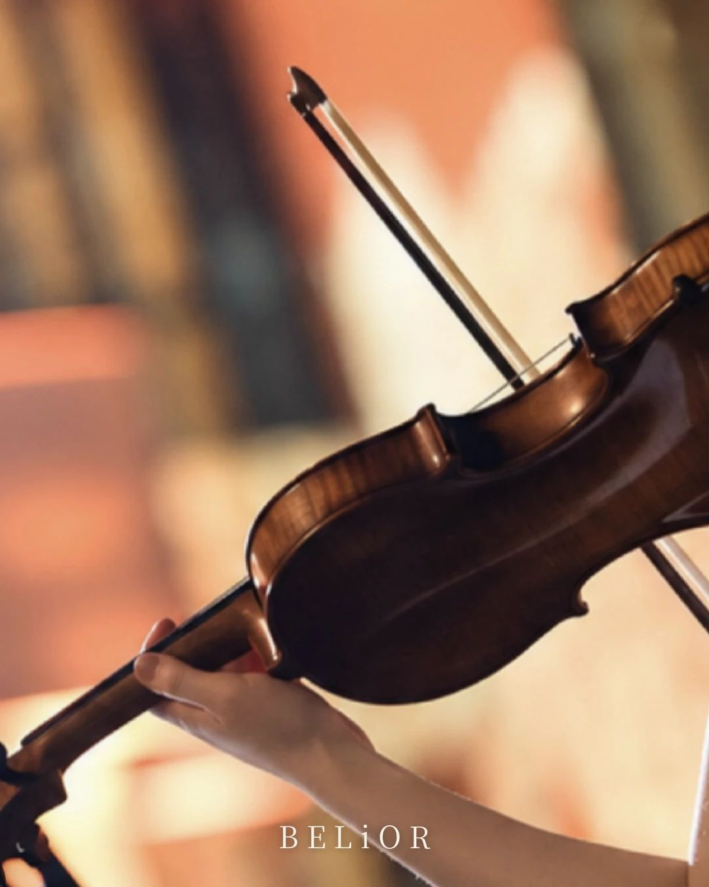
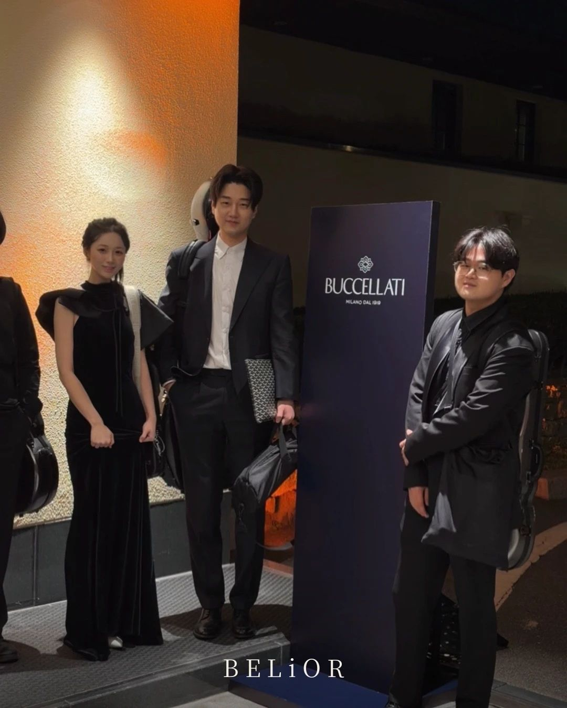

Editorial · Buccellati Dinner, Seoul
강 위로 저무는 저녁
부첼라티 디너에서 BELiOR는 현장의 라이브 연주를 맡았고, 연주에 대해 좋은 평가를 받았습니다.

Reception
손님이 도착하는 시간
조명이 켜지기 시작할 무렵, 리셉션의 공기를 현악 4중주로 채웠습니다.
The Venue
원형 테이블과 한강
언덕 위 잔디에 놓인 원형 디너 테이블, 그 너머로 강과 다리가 이어지는 풍경입니다.


